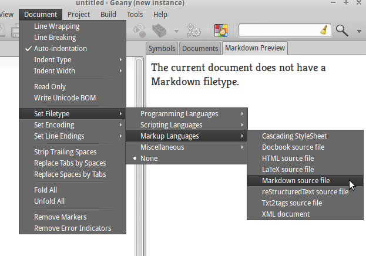
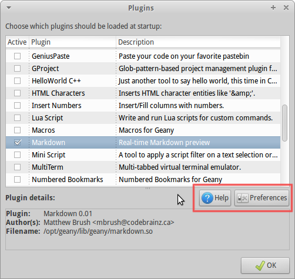
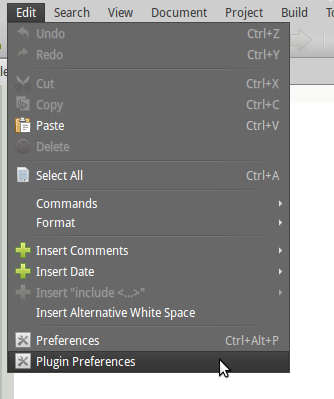

This plugin provides a real-time preview of rendered Markdown, that is, Markdown converted to HTML and inserted into an HTML template and loaded into a WebKit view.
The preview is active by default for all documents with a Markdown filetype set. To set a document's filetype, choose from the menus:
Other than that the operation should be fully automatic. Use the Plugin Preferences mechanism to customize some settings as described below.
For more information on Markdown syntax, read the Markdown Syntax Documentation.
Using Geany's normal Plugin Preferences mechanism, you can customize some important settings related to the Markdown preview. The preferences dialog allows changing the following settings:
| Name | Description |
|---|---|
| Position | The area of Geany's UI to put the preview view, currently either in the sidebar or message window (bottom) areas. |
| Font | The regular body font of the preview. |
| Code Font | The font to use for the code tags (monospaced) font of the preview. |
| BG Color | The preview's background color. |
| FG Color | The preview's foreground (text) color. |
| Template | The file containing the HTML template for the preview. |
There's two ways to access the Plugin settings, one is through the Plugin Manager using the buttons highlighted below:
Clicking the Help button opens this document in HTML format in your web browser. The other way to access the plugin's preferences is through the Edit menu as pictured below:
You can provide a custom HTML template file which contains the substitution strings that get replaced at run-time. The following substitution strings are available:
| Substitution String | Description |
|---|---|
| @@markdown@@ | The most important substitution string and gets replaced with the HTML generated from the editor's Markdown buffer. Not having this one in the template makes the plugin completely useless. |
| @@font_name@@ | The normal font family. |
| @@code_font_name@@ | The code/monospace font family. |
| @@font_point_size@@ | The size in points of the normal font. |
| @@code_font_point_size@@ | The size in points of the code/monospace font. |
| @@bg_color@@ | The background color in hex/HTML color notation. |
| @@fg_color@@ | The foreground (text) color in hex/HTML color notation. |
The default template file (at the time of writing) contains the following HTML code:
<html>
<head>
<style type="text/css">
body {
font-family: @@font_name@@;
font-size: @@font_point_size@@pt;
background-color: @@bg_color@@;
color: @@fg_color@@;
}
code {
font-family: @@code_font_name@@;
font-size: @@code_font_point_size@@pt;
}
</style>
</head>
<body>
@@markdown@@
</body>
</html>
As you can see it's just normal HTML/CSS and you can tweak it to make the preview contents look exactly how you want. The preview view is a WebKit browser, the same one used by Google's Chrome Browser and Apple's Safari Browser as well as numerous others, and it supports many modern features such as HTML5 and CSS3 support (at least partially).
If you mess up the default template.html file, just delete it and the default one will be recreated the next time the Markdown plugin is reloaded (for example when Geany restarts).
The plugin depends on the following libraries:
The Markdown plugin is licensed under the GNU General Public License, version 2. For the full text of the license, please visit http://www.gnu.org/licenses/gpl-2.0.html. The GPL license covers all code and files not in the discount directory.
All code inside the discount directory is under a BSD-style license (see the discount/COPYRIGHT file) and all contributions to this code will remain under this license. This will make it easier to integrate improvements to Discount back upstream if it ever makes sense. So far the only changes are superficial to allow it to build with the Geany-Plugins build system and to prevent some compiler warnings.
The Geany Markdown plugin is written and maintained by:
Matthew Brush <matt(at)geany(dot)org>
The plugin includes the Discount Markdown library, developed by:
David Loren Parsons <http://www.pell.portland.or.us/~orc>
You can email me at matt(at)geany(dot)org, or find me on the #geany IRC channel on FreeNode, with the nickname codebrainz.
{kind=link}
{kind=link}
{kind=link}
{kind=link}
{kind=link}